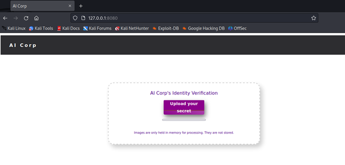

Fourtune_ML_CTF_Challenge 是 Machine_Learning_CTF_Challenges 系列中关于对抗样本（Adversarial Sample）的挑战。服务端部署了一个 Keras MNIST 分类模型，通过 HTTP 接口接收用户上传的图片并进行识别，只有识别结果为数字 4 时才会返回 flag。
搭建环境
使用以下 Dockerfile 构建镜像（已替换为阿里云镜像加速）：
Dockerfile
FROM python:3.11-slim
WORKDIR /app
RUN apt-get update && apt-get install -y --no-install-recommends ca-certificates && rm -rf /var/lib/apt/lists/*
RUN pip install --no-cache-dir --trusted-host mirrors.aliyun.com \
-i http://mirrors.aliyun.com/pypi/simple/ \
scikit-image requests
COPY model.h5 server.py templates/ ./
EXPOSE 8080
CMD ["python", "server.py"]
服务端源码分析
服务端使用 Python 内置的 http.server 实现，不依赖 Flask：
server.py
import os
os.environ['TF_CPP_MIN_LOG_LEVEL']='2'
from http.server import HTTPServer, BaseHTTPRequestHandler
import ssl
import sys
import cgi
import base64
import numpy as np
from io import BytesIO
import requests
import keras
from PIL import Image
import imghdr
model = keras.models.load_model('./model.h5')
class SimpleHTTPRequestHandler(BaseHTTPRequestHandler):
def do_GET(self):
forwardedfor = str(self.headers['X-Forwarded-For'])
print(f"GET {forwardedfor}")
self.send_response(200)
self.end_headers()
self.wfile.write(STATIC_HTML_PAGE)
def do_POST(self):
content_length = int(self.headers["Content-Length"])
if int(content_length) > 10000000:
print("File too big")
self.send_response(500, "File too big")
return
form = cgi.FieldStorage(
fp=self.rfile,
headers=self.headers,
environ={"REQUEST_METHOD":"POST",
"CONTENT_TYPE":self.headers["Content-Type"]})
filename = str(form['file'].filename)
data = form["file"].file.read()
filetype = imghdr.what(file="", h=data)
if filetype not in ["png","jpeg","gif"]:
print(f"Unsupported media type: {filetype}")
self.send_response(415, "Only png, jpg and gif are supported.")
return
image = np.array(Image.open(BytesIO(data)).convert("L"))
processedImage = np.zeros([1, 28, 28, 1])
for yy in range(28):
for xx in range(28):
processedImage[0][xx][yy][0] = float(image[xx][yy]) / 255
shownDigit = np.argmax(model.predict(processedImage))
self.send_response(200)
self.send_header("Content-Type", "application/json")
self.end_headers()
if shownDigit == 4:
response = '{ "text": " Welcome Mr. ' + str(shownDigit) +'tune {++BackPropogation Magic++}"}'
else:
response = '{ "text": "Access Denied"}'
self.wfile.write(bytes(response,"utf-8"))
httpd = HTTPServer(("", 8080), SimpleHTTPRequestHandler)
httpd.serve_forever()关键逻辑分析：
- 使用
imghdr验证上传文件类型为 png/jpeg/gif - 将图片转换为灰度（
convert("L")），缩放到 28×28 像素 - 像素值归一化到 [0, 1] 区间
- 使用 Keras 模型进行预测，
np.argmax取概率最高的类别 - 当预测结果为 4 时返回 flag，否则返回
"Access Denied"
响应中返回的 flag 格式为 Mr.4tune {++BackPropogation Magic++}。
对抗样本攻击
攻击思路是构造一张对抗样本图片，让模型将其误分类为数字 4。常用的方法包括：
- FGSM（Fast Gradient Sign Method）：在原始图像上添加沿着梯度方向的微小扰动，使模型输出偏离正确分类
- PGD（Projected Gradient Descent）：FGSM 的迭代版本，通过多次小步迭代生成更强的对抗样本
- 手工构造：由于模型是 MNIST 数字识别，可以直接绘制一张类似数字 4 的图片进行测试
以下是一个简单的 FGSM 对抗样本生成脚本：
fgsm_attack.py
import numpy as np
import keras
from PIL import Image
from io import BytesIO
model = keras.models.load_model('./model.h5')
# 加载一张不是 4 的图片（如数字 0）
image = np.array(Image.open("zero.png").convert("L"))
x = np.zeros([1, 28, 28, 1])
for yy in range(28):
for xx in range(28):
x[0][xx][yy][0] = float(image[xx][yy]) / 255
# 计算梯度，使模型预测为 4
x_tensor = tf.convert_to_tensor(x, dtype=tf.float32)
with tf.GradientTape() as tape:
tape.watch(x_tensor)
pred = model(x_tensor)
loss = -pred[0][4] # 最大化类别 4 的置信度
grad = tape.gradient(loss, x_tensor)
epsilon = 0.1
adv_x = x_tensor + epsilon * tf.sign(grad)
adv_x = tf.clip_by_value(adv_x, 0, 1)
# 保存对抗样本
adv_img = np.squeeze(adv_x.numpy()) * 255
Image.fromarray(adv_img.astype(np.uint8)).save("adversarial_4.png")构造完成后，通过 HTTP POST 上传该对抗样本图片，服务端模型将其识别为数字 4 并返回 flag。